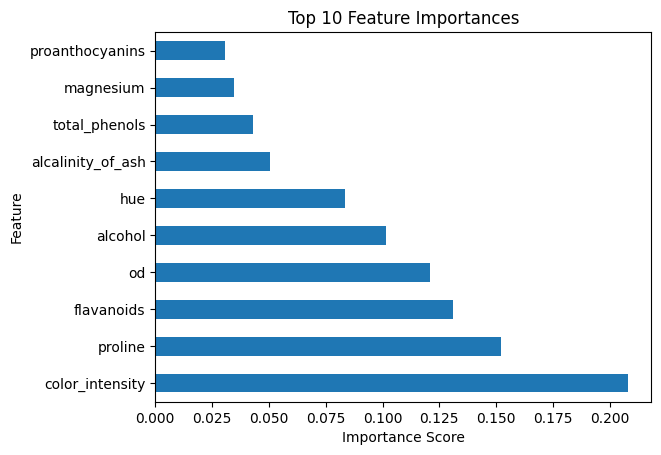

import pandas as pd
from sklearn.model_selection import train_test_split
from sklearn.ensemble import RandomForestClassifier
from sklearn.metrics import accuracy_score
wine_data = pd.read_csv('wine-training.csv')
(wine_data).head()| alcohol | malic_acid | ash | alcalinity_of_ash | magnesium | total_phenols | flavanoids | nonflavanoid_phenols | proanthocyanins | color_intensity | hue | od | proline | wine | |
|---|---|---|---|---|---|---|---|---|---|---|---|---|---|---|
| 0 | 13.71 | 1.86 | 2.36 | 16.6 | 101 | 2.61 | 2.88 | 0.27 | 1.69 | 3.80 | 1.11 | 4.00 | 1035 | 0 |
| 1 | 13.88 | 5.04 | 2.23 | 20.0 | 80 | 0.98 | 0.34 | 0.40 | 0.68 | 4.90 | 0.58 | 1.33 | 415 | 2 |
| 2 | 12.29 | 1.41 | 1.98 | 16.0 | 85 | 2.55 | 2.50 | 0.29 | 1.77 | 2.90 | 1.23 | 2.74 | 428 | 1 |
| 3 | 12.21 | 1.19 | 1.75 | 16.8 | 151 | 1.85 | 1.28 | 0.14 | 2.50 | 2.85 | 1.28 | 3.07 | 718 | 1 |
| 4 | 12.82 | 3.37 | 2.30 | 19.5 | 88 | 1.48 | 0.66 | 0.40 | 0.97 | 10.26 | 0.72 | 1.75 | 685 | 2 |
# Prepare the data
X = wine_data.drop('wine', axis=1) # Features (all columns except 'wine')
y = wine_data['wine'] # Target variable ('wine' column)
# Split data into training and testing sets
X_train, X_test, y_train, y_test = train_test_split(X, y, test_size=0.2, random_state=42)
# Train a model
model = RandomForestClassifier(random_state=42)
model.fit(X_train, y_train)
# Make predictions
predictions = model.predict(X_test)
# Evaluate the model (optional)
accuracy = accuracy_score(y_test, predictions)
print(f"Accuracy: {accuracy}")Accuracy: 0.9166666666666666# Save predictions to CSV
submission_df = pd.DataFrame(predictions, columns=['Class'])
submission_df.to_csv('wine_predictions.csv', index=False)Holdout
wine_holdout = pd.read_csv('wine-holdout.csv')# prompt: make predictions of the wine training dataset against the holdout
# Make predictions on the holdout set
holdout_predictions = model.predict(wine_holdout)
# Create a submission DataFrame for the holdout predictions
holdout_submission_df = pd.DataFrame(holdout_predictions, columns=['Class'])
# Save the holdout predictions to a CSV file
holdout_submission_df.to_csv('wine_holdout_predictions.csv', index=False)Accuracy on test set: 0.9166666666666666import pandas as pd
import matplotlib.pyplot as plt
# Assuming 'model' and 'X' are already defined from your previous code
# Get feature importances
importances = model.feature_importances_
feature_names = X.columns
# Create a Pandas Series
feat_importances = pd.Series(importances, index=feature_names)
# Plot the horizontal bar chart
feat_importances.nlargest(10).plot(kind='barh')
plt.title('Top 10 Feature Importances')
plt.xlabel('Importance Score')
plt.ylabel('Feature')
plt.show()
import pandas as pd
from sklearn.model_selection import train_test_split
from sklearn.ensemble import RandomForestClassifier
from sklearn.preprocessing import StandardScaler, OneHotEncoder
from sklearn.compose import ColumnTransformer
from sklearn.pipeline import Pipeline
from sklearn.metrics import recall_score
# Load the training data
wine_data = pd.read_csv('wine-training.csv')
# Separate features (X) and target (y)
X = wine_data.drop('wine', axis=1)
y = wine_data['wine']
# Split data into training and testing sets
X_train, X_test, y_train, y_test = train_test_split(X, y, test_size=0.2, random_state=42)
# Identify numerical and categorical features (if any)
numerical_features = X.select_dtypes(include=['number']).columns
categorical_features = X.select_dtypes(include=['object']).columns
# Create transformers for numerical and categorical features
numerical_transformer = Pipeline(steps=[
('scaler', StandardScaler()) # Normalization
])
categorical_transformer = Pipeline(steps=[
('onehot', OneHotEncoder(handle_unknown='ignore')) # One-hot encoding
])
# Combine transformers using ColumnTransformer
preprocessor = ColumnTransformer(
transformers=[
('num', numerical_transformer, numerical_features),
('cat', categorical_transformer, categorical_features),
])
# Create a pipeline with preprocessing and model
model = Pipeline(steps=[
('preprocessor', preprocessor),
('classifier', RandomForestClassifier(random_state=42, class_weight='balanced')) # Aim for recall
])
# Train the model
model.fit(X_train, y_train)
# Make predictions on the holdout set
wine_holdout = pd.read_csv('wine-holdout.csv')
holdout_predictions = model.predict(wine_holdout)
# Create a submission DataFrame
holdout_submission_df = pd.DataFrame(holdout_predictions, columns=['Class'])
# Save the predictions to a CSV file
holdout_submission_df.to_csv('wine_holdout_predictions.csv', index=False)
# Evaluate on test set (optional)
predictions = model.predict(X_test)
recall = recall_score(y_test, predictions, average='weighted') # Calculate recall
print(f"Recall: {recall}")Recall: 0.9166666666666666import pandas as pd
from sklearn.model_selection import train_test_split
from sklearn.ensemble import RandomForestClassifier
from sklearn.preprocessing import StandardScaler, OneHotEncoder
from sklearn.compose import ColumnTransformer
from sklearn.pipeline import Pipeline
from sklearn.metrics import accuracy_score, recall_score, precision_score, f1_score, confusion_matrix
# ... (Previous code for model training and prediction) ...
# Evaluate on the test set
test_predictions = model.predict(X_test)
# Calculate metrics for the test set
test_accuracy = accuracy_score(y_test, test_predictions)
test_recall = recall_score(y_test, test_predictions, average='weighted')
test_precision = precision_score(y_test, test_predictions, average='weighted')
test_f1 = f1_score(y_test, test_predictions, average='weighted')
test_confusion_matrix = confusion_matrix(y_test, test_predictions)
# Print test set metrics
print("Test Set Metrics:")
print(f"Accuracy: {test_accuracy}")
print(f"Recall: {test_recall}")
print(f"Precision: {test_precision}")
print(f"F1-Score: {test_f1}")
print("Confusion Matrix:")
print(test_confusion_matrix)
# Evaluate on the holdout set
holdout_predictions = model.predict(wine_holdout) # Assuming 'wine_holdout' is your holdout data
# Since true labels for holdout are usually unknown, we can't calculate metrics
# Instead, focus on saving predictions for submission
# Create a submission DataFrame
holdout_submission_df = pd.DataFrame(holdout_predictions, columns=['Class'])
# Save the predictions to a CSV file
holdout_submission_df.to_csv('wine_holdout_predictions.csv', index=False)
print("\nHoldout predictions saved to 'wine_holdout_predictions.csv'")Test Set Metrics:
Accuracy: 0.9166666666666666
Recall: 0.9166666666666666
Precision: 0.921875
F1-Score: 0.9166666666666666
Confusion Matrix:
[[7 1 0]
[0 8 1]
[0 0 7]]
Holdout predictions saved to 'wine_holdout_predictions.csv'